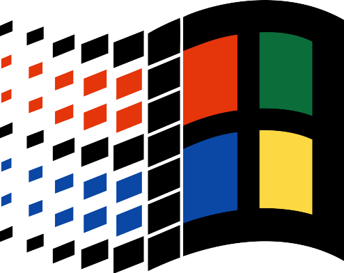
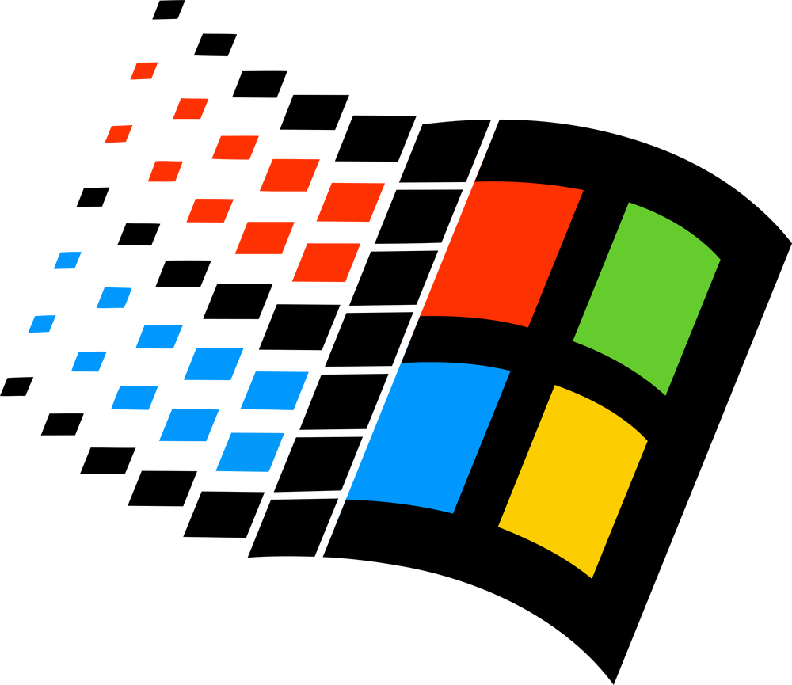
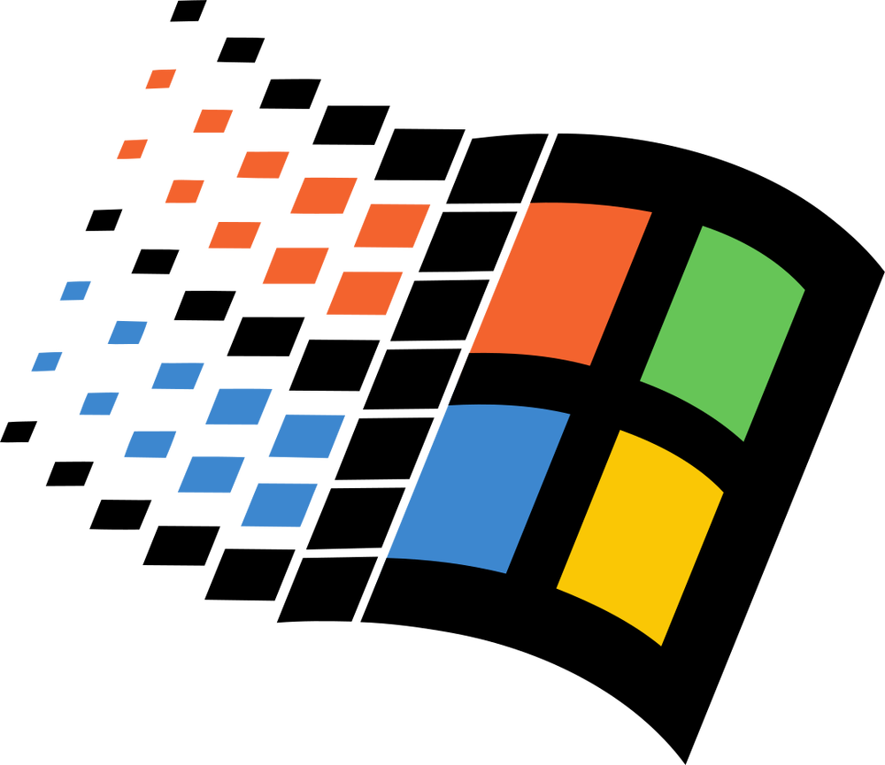
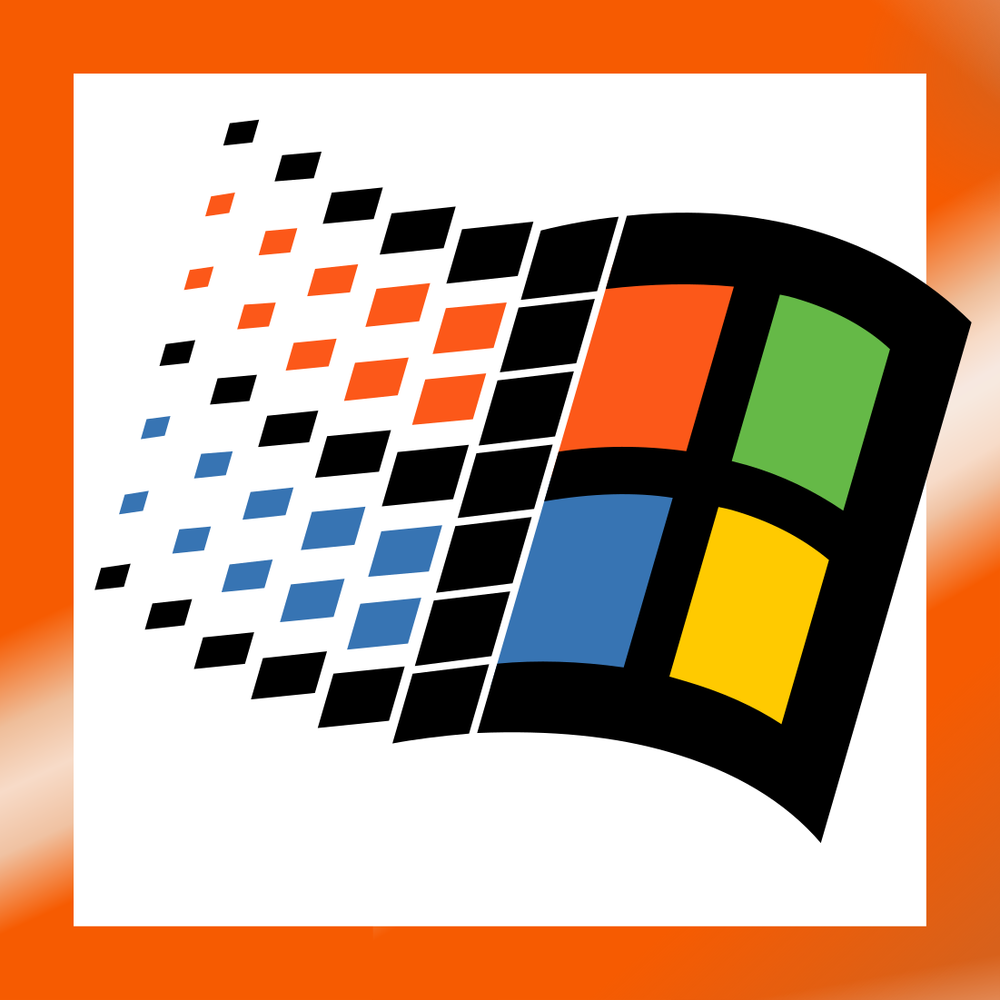
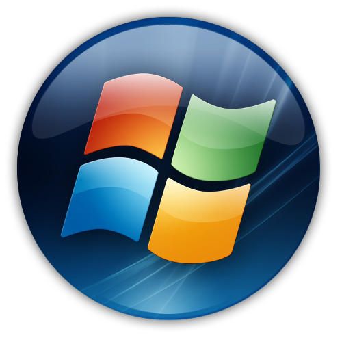
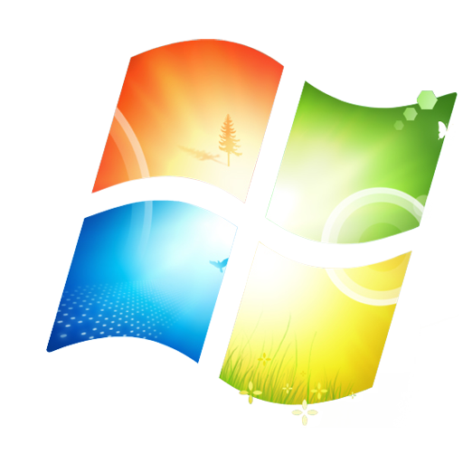
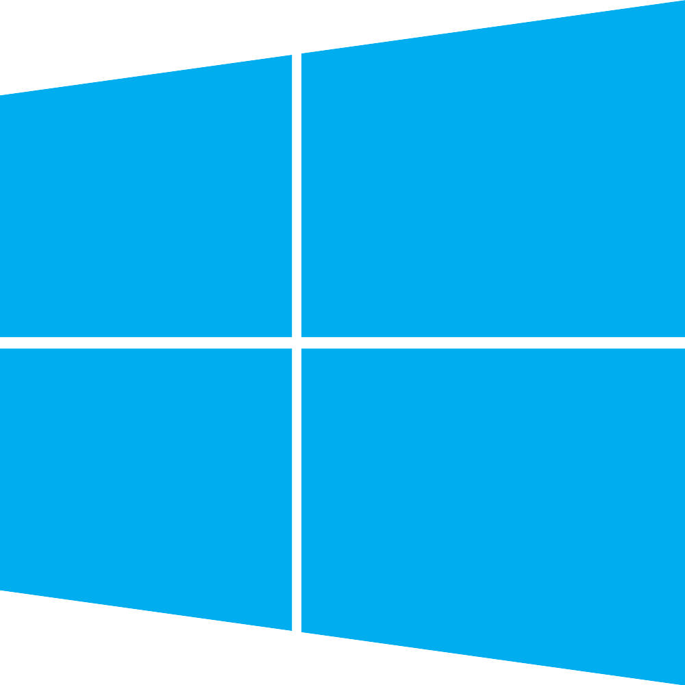
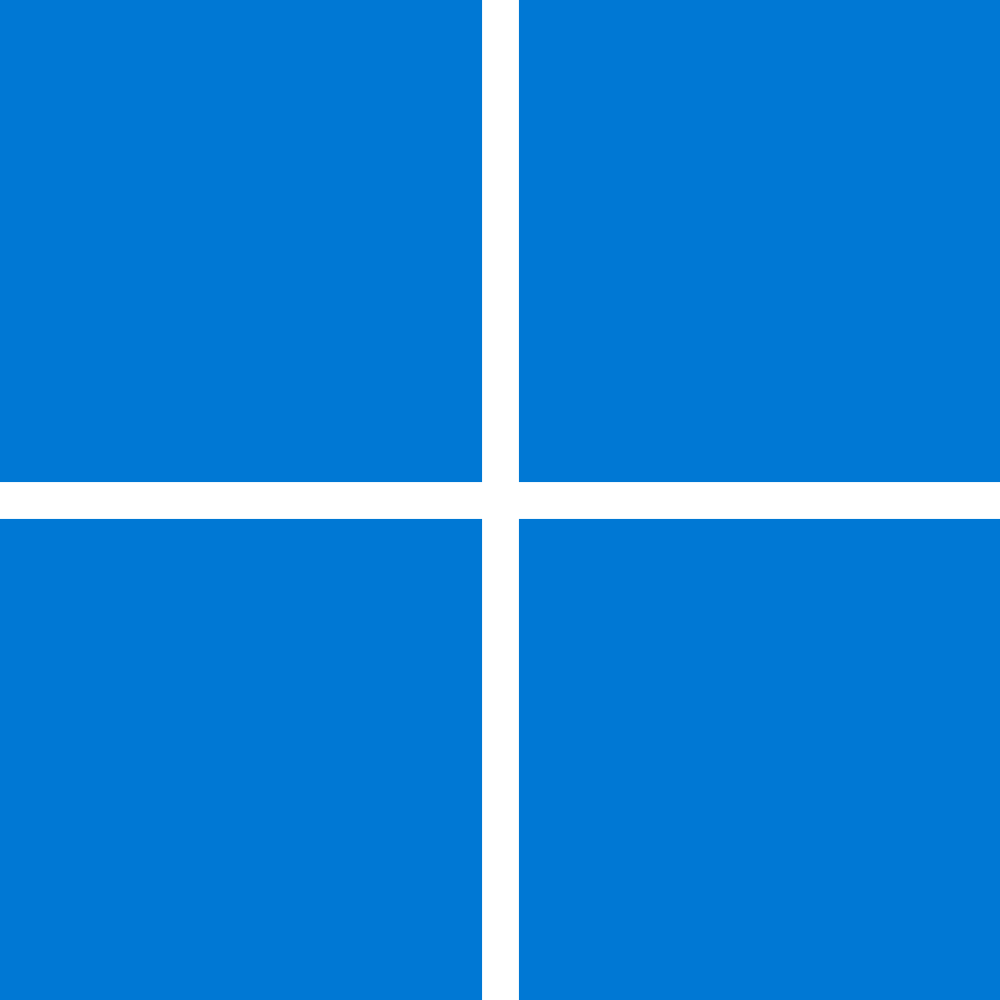

Choix de version Windows
Chaque lien ouvre une simulation avec apps et contenu pédagogique partagés ; seule la présentation (barre des tâches, menu Démarrer, chrome fenêtres) diffère selon l’époque.

Windows 95 — shell classic
Windows 98 — shell classic
Windows ME — shell classic
Windows 2000 — shell NT Windows XP — Luna
Windows XP — Luna
Windows Vista — Aero Glass
Windows 7 — Aero 7
Windows 8 — Metro- Windows 8.1 — Metro + Démarrer
 Windows 10 — Fluent moderne
Windows 10 — Fluent moderne
Windows 11 — référence complète